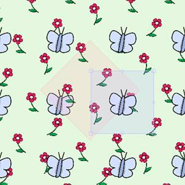

Open a new document (Ctrl + N)
A dialog box will ask you to enter the width and height of your document and its resolution.
Enter "A4" into the predefined formats.
Import the flower image from the image bank (Ctrl + D)
A pattern is automatically created.

Enlarge the pattern while keeping shift pressed (to avoid distortion) and rotate it 45° :
Select the image and duplicate it: (Ctrl + R)
Note: If you want to delete a image, select it and merely press on del.
Move the new image, swivel it. You can also apply symmetry by entering, preceded by the minus sign, its value (horizontal or vertical) in the dimensions field of the Transformations window.
In this way, repeating the operation, compose a network with this image.
Remember that you can change the background colour.
Create a new pattern (Ctrl + M).
Import the butterfly image here (Ctrl + D)

This new pattern is completely independent.
Having several patterns lets you superimpose several networks on the same document.
*
Uncheck the "Display the selection box" checkbox to see your network without the selection boxes of the patterns.
Copyright 2009 - Patternshop